Đến với Nha Trang tắm biển, ngắm cảnh thôi thì chưa đủ. Với ẩm thực Nha Trang, dù là món chính hay các thức quà vặt ăn vào xế chiều thì mọi khẩu vị đều luôn được chiều chuộng. Đồ ăn nơi đây vừa ngon, vừa bổ lại vừa túi tiền nên phải ăn cho bằng hết các món dưới đây mới gọi là đến Nha Trang bạn nhé.
1. Hải Sản
Đi biển thì tất nhiên không thể bỏ qua hải sản rồi. Vựa hải sản là linh hồn trong văn hóa ẩm thực Nha Trang, vừa tươi, vừa ngọt, lại dai và giòn thịt. Ngoài cua, ốc, tôm, nghêu, sò, Nha Trang còn nổi tiếng với món nhum, cá tắc kè nướng chấm muối ớt, cồi mai, tôm tít… Tất cả đều là những cực phẩm của biển khơi.
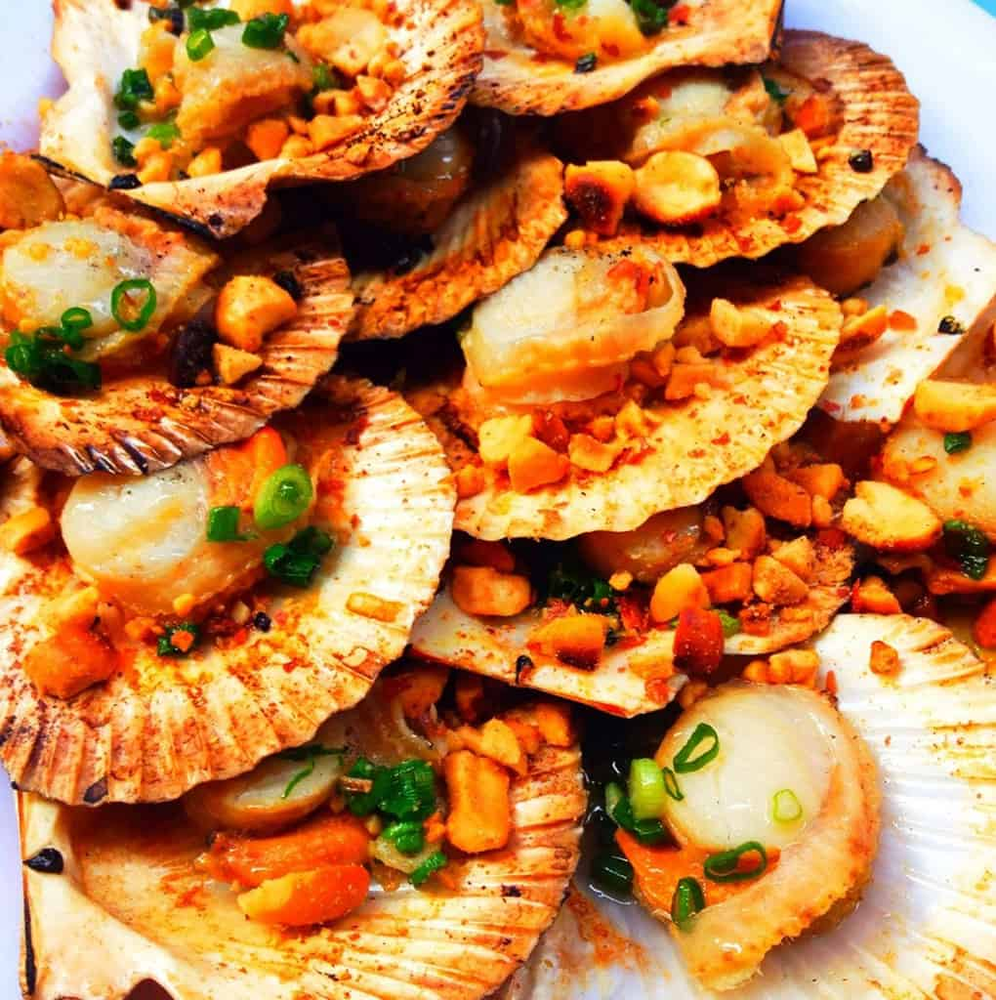
Sò Điệp nướng mở hành
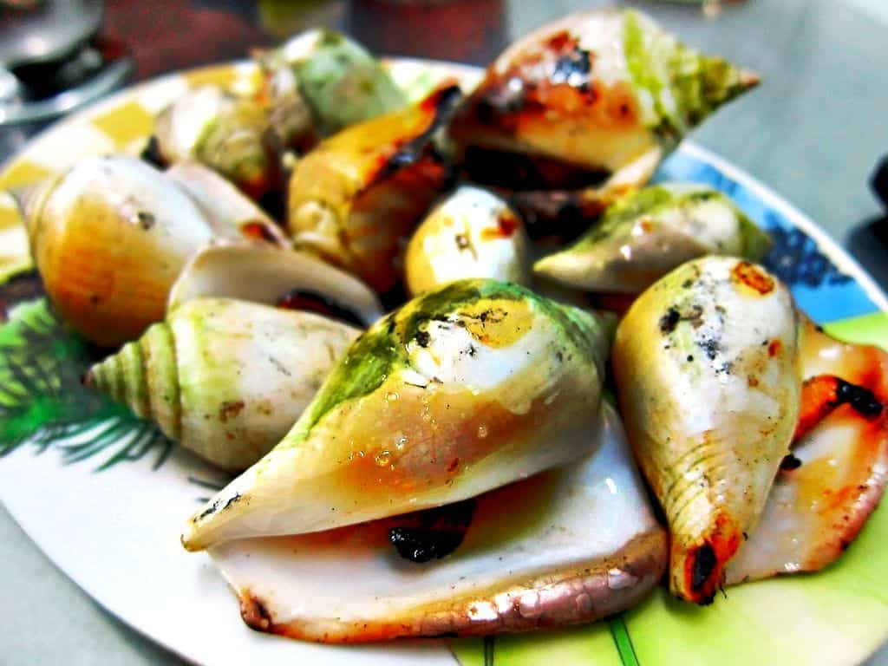
Khách du lịch yêu thích nhất là các quán bờ kè ven biển, vừa ăn uống, vừa tận hưởng làn gió biển và sóng vỗ rì rào. Các quán này thường rất tấp nập mỗi tối và toàn những món đặc sản của ẩm thực Nha Trang chính hiệu thôi. Nếu có thể dạo quanh làng chài vào sáng sớm, bạn sẽ mua được hải sản tươi roi rói trong ngày đấy. Đem hấp hoặc nướng mọi để giữ nguyên vị món ăn thì tuyệt phải biết!
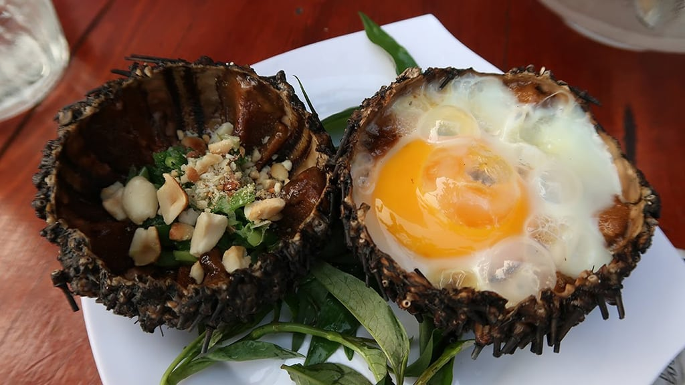
Đặc sản nhum nướng trứng.
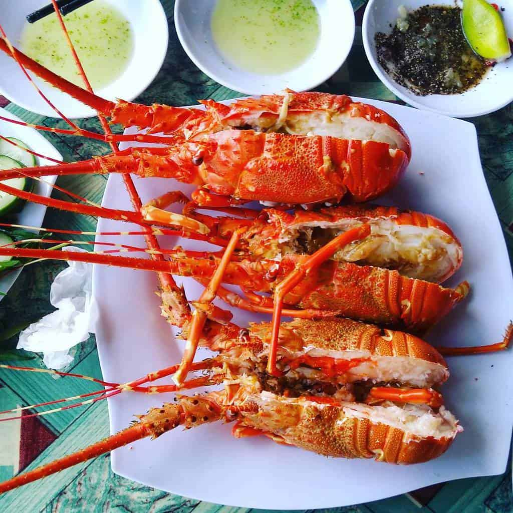
Một số quán hải sản nổi tiếng trong giới ẩm thực Nha Trang dưới đây sẽ là gợi ý vô cùng hữu ích cho bạn. Hãy kiểm tra ngay quán nào gần khách sạn của bạn nhé.
- Quán ốc 24: 24 Ngô Đức Kế, Nha Trang.
- Quán ốc Xuân Anh: 9 Tháp Bà, Nha Trang.
- Quán ốc Long Vũ: 133 Tháp Bà, Nha Trang.
- Hải sản Bình dân: 6 Ngô Sĩ Liên, Nha Trang.
- Hải sản Bãi Dương: 102 Trần Phú, Nha Trang.
- Hải sản Thanh Sương: 20 Trần Phú, Nha Trang.
- Hải sản Gió biển: 10 Phạm Văn Đồng, Nha Trang.
- Quán Bờ kè: 52 Cù Huân (42B Cù Lao Trung cũ), Nha Trang.
- Hải sản Làng chài Nha Trang: Hòn Tre, Vĩnh Nguyên, Nha Trang
2. Bò nướng lạc cảnh
Món ăn này đã trở thành một thương hiệu không thể không nhắc đến trong bản đồ ẩm thực Nha Trang. Bò nướng Lạc Cảnh thần thánh ai thử rồi cũng đều ngây ngất bởi những miếng thịt bò mềm, thơm lại thấm gia vị tẩm ướp, ăn với đậu bắp nướng, rau sống (xà lách, cà chua, dưa leo, hành tây thái mỏng). Ăn bò nướng cùng muối tiêu chanh nữa thì không chê vào đâu được.
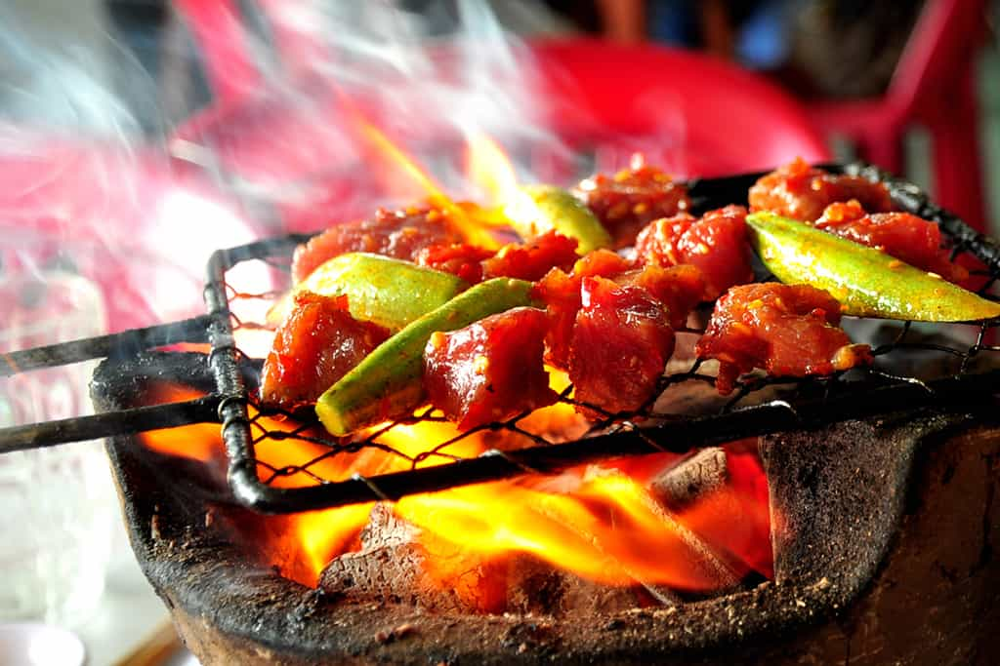
Quán bò nướng Lạc Cảnh ngon thần thánh được rỉ tai nhau khắp cộng đồng du lịch mê mệt ẩm thực Nha Trang. Bạn nhất định phải dành một buổi chiều mát mẻ để thưởng thức cho bằng được món ăn này nhé. Tuy nhiên, quán khá đông nên bạn muốn ăn thì phải tới sớm hoặc xếp hàng đấy.
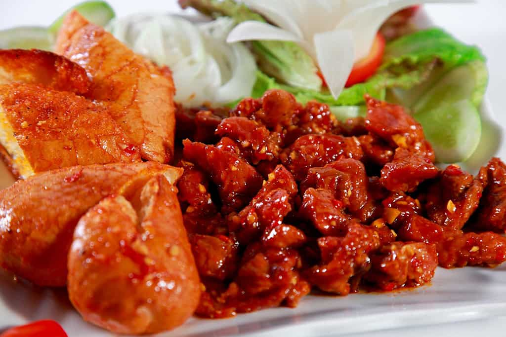
- Địa chỉ: 44 Nguyễn Bình Khiêm, Nha Trang.
- Giờ mở cửa: 10:00 – 23:00
3. Nem nướng Ninh Hòa
Thịt heo tươi còn ấm, xay nhuyễn, thêm gia vị vừa ăn, nặn xung quanh cây đũa tre và nướng chính trên than hồng. Nghe tới đây là cũng tưởng tượng được mùi vị quen thuộc của ẩm thực Nha Trang rồi. Nem nướng xong vừa thơm, vừa mềm, không quá nạc, cũng không quá mỡ.
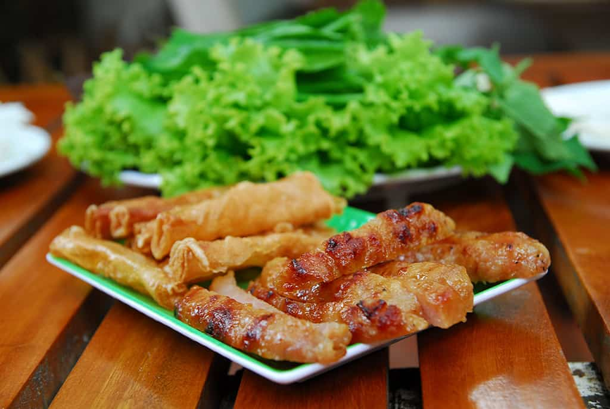
Một phần ăn đầy đặn, đẹp màu sắc, ngon hương vị.
Món ăn này đặc biệt cũng bởi chén nước chấm đặc sánh, ấm nóng, rổ rau sống đã con mắt, mát khúc ruột. Cuốn, cuốn, cuốn cứ gọi là không dừng tay. Ngoài ra, bạn có thể ăn nem nướng với bún như món bún thịt nướng cũng rất đã miệng.
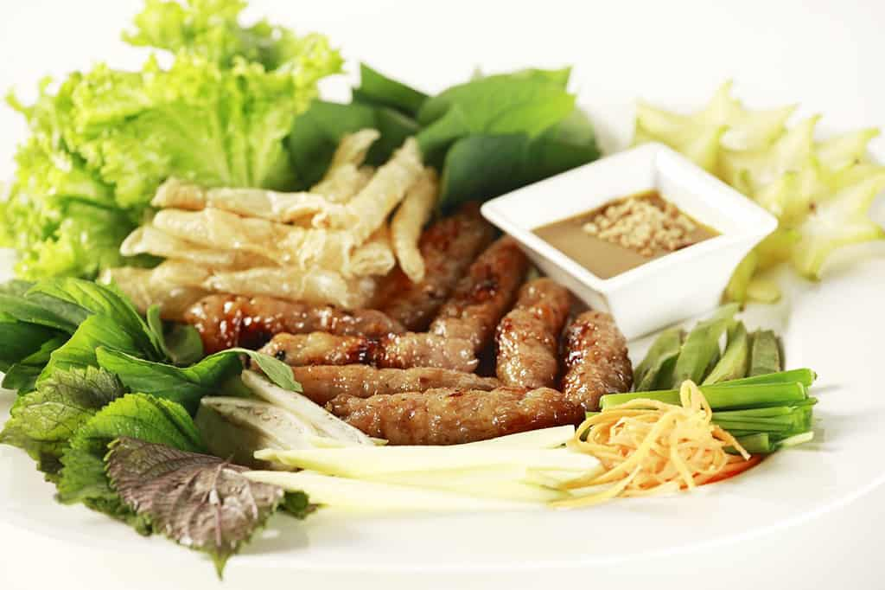
Tại Nha Trang, các quán bán nem nướng bình dân rất nhiều, hầu như con đường nào cũng có. Ngày mưa hay ngày nắng thì ăn nem nướng cũng đều ngon. Bạn có thể tham khảo một số quán nem nướng Ninh Hòa nổi tiếng trong giới ẩm thực Nha Trang nhé.
- Nem nướng: 25 Lê Hồng Phong, Nha Trang.
- Nem nướng Vũ Thành An: 15 Lê Lợi, Nha Trang.
- Nem nướng cô Nô: 24 Hai Bà Trưng, Nha Trang.
- Quầy Nem nướng cuốn sẵn: 50 Thống Nhất, Nha Trang.
- Nem nướng Đặng Văn Quyên: 16A Lãn Ông, Nha Trang.
- Nem nướng Ngọc Tiên: 59 Lê Thành Phương, Nha Trang.
- Nem nướng Nhã Trang: 39 Nguyễn Thị Minh Khai, Nha Trang.
4. Bún cá, bánh canh chả cá, bún sứa
Ẩm thực Nha Trang không đơn thuần thỉ có hải sản ăn riêng lẻ, mà còn món bún cá, bánh canh chả cá và bún sứa nữa bạn nhé. Ba món ăn nổi tiếng này có đủ cá dằm tươi, chả cá thái lát dai dai, chả cá viên, sứa sần sật, thêm mấy miếng cà chua. Nghĩ đến đã thấy vừa đẹp mắt, vừa mát lại ngon miệng, ăn thêm rau sống, ớt sắt là “số dzách” luôn rồi.
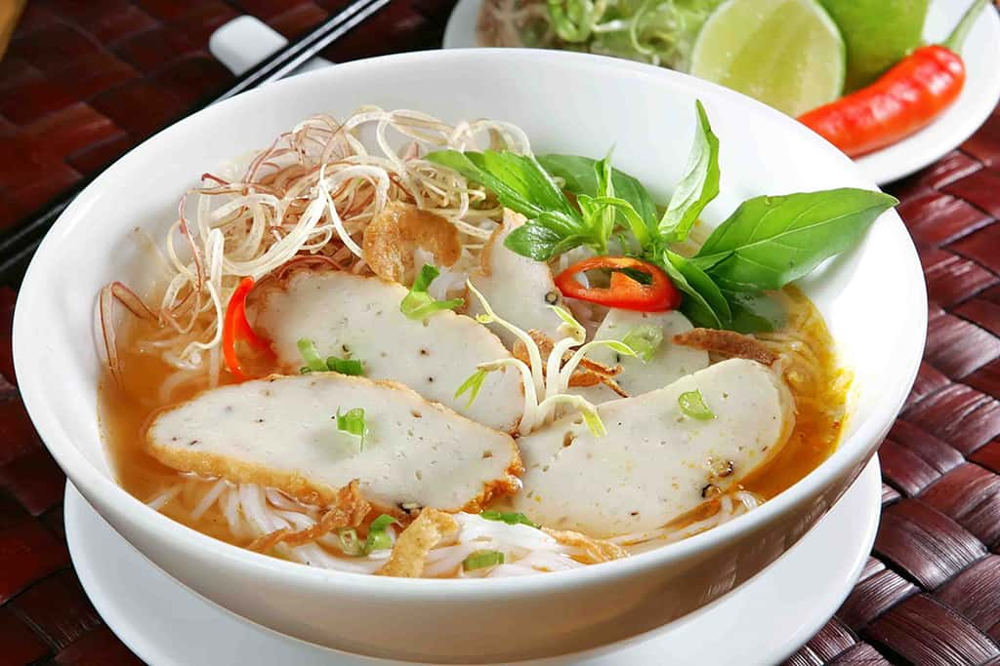
Tô bún cá với cá tươi và chả cá đầy ự.
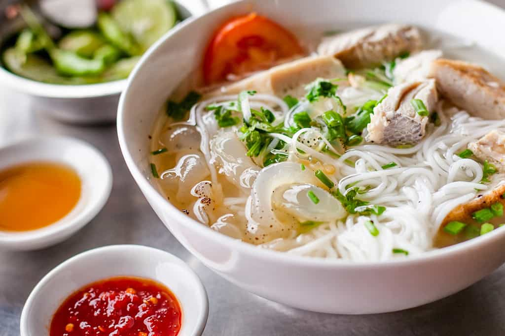
Các tín đồ sành ẩm thực Nha Trang khi ăn bún cá, bánh canh bột gạo chả cá hay bún sứa vẫn không quên gọi thêm cả lòng cá trứng cá, vừa bùi lại beo béo. Tô bún nóng hổi, vị thanh, bổ dưỡng mà dễ ăn nên ai cũng yêu thích. Du khách thường chọn món ăn này để làm bữa sáng cho ngày mới ấm bụng, nhiều năng lượng.
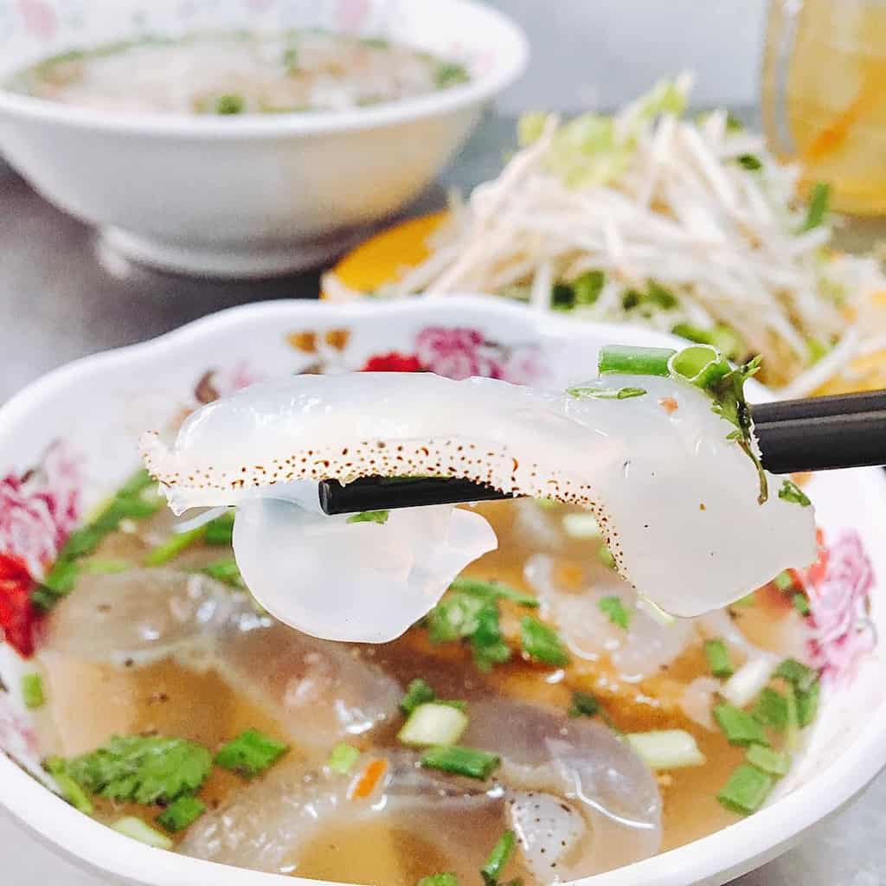
Nhiều nơi còn có thêm lựa chọn như cá ngừ, cá thu ăn cũng rất bắt vị. Nước lèo nấu từ nhiều loại cá biển nên ngọt và thanh, chả cá làm từ thịt cá tươi, sứa cũng tươi mới giòn và không tanh. Rải khắp Nha Trang có rất nhiều quán bán bún cá, bánh canh bột gạo chả cá và bún sứa với giá từ 25.000 – 35.000 VND. Nếu bạn muốn ăn ngon thì có thể ghé thử những quán dưới đây nhé.
- Bún cá Cô Ba: 123 Yersin, Nha Trang.
- Bún cá, sứa: 23A Yết Kiêu, Nha Trang.
- Bún cá Mịn: 170 Bạch Đằng, Nha Trang.
- Bún cá Đức: B8 Phan Bội Châu, Nha Trang
- Bún cá lá Ninh Hòa: 2 Lãn Ông, Nha Trang
- Bún sứa 05 Beo: 47 Phan Bội Châu, Nha Trang.
- Bún cá Lá cây bàng: 6 Hàn Thuyên, Nha Trang.
- Bún cá Nguyên Loan: 123 Ngô Gia Tự, Nha Trang.
- Bún cá sứa Dốc Lếch: ngã 5 Yersin – Bà Triệu, Nha Trang.
- Bún cá Nha Trang Hạnh Nhiên: 132 Bạch Đằng, Nha Trang.
- Bún cá sứa: Góc đường Võ Trứ, gần chợ Xóm Mới, Nha Trang.
5. Bánh Xèo
Theo phong cách ẩm thực Nha Trang, bánh xèo thường nhỏ, nằm gọn trong cái chảo bé khoảng hai lòng bàn tay. Vỏ bánh xèo vàng ươm, giòn rụm. Nhân bánh đặc biệt bởi tôm và mực tươi của biển Nha Trang. Nhân càng tươi thì càng dai, càng ngọt, ăn càng đã miệng. Bạn ăn kèm rau sống, chấm mắm chua ngọt, cay cay là đúng điệu bánh xèo Nha Trang luôn đấy.
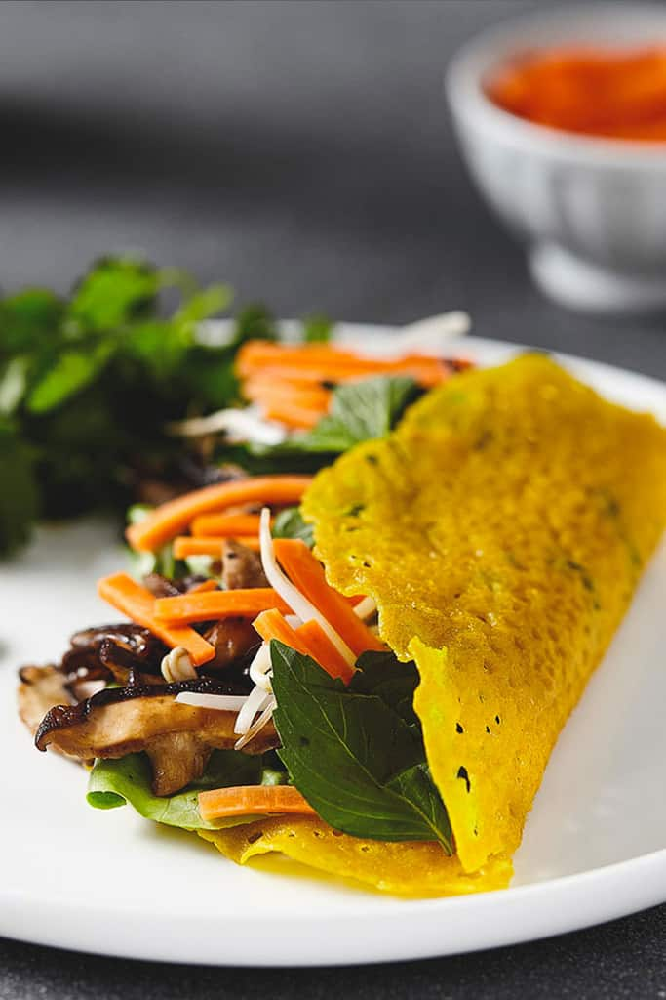
Bánh xèo là một món ăn dân dã đậm chất miền Trung và miền Nam. Mỗi một nơi, bánh xèo lại được chế biến theo một kiểu khác nhau, chủ yếu dựa trên các đặc sản vốn có của vùng miền. Một chiếc bánh xèo Nha Trang chỉ khoảng 5.000 VND, mỗi người ăn khoảng bốn đến năm cái là no căng bụng.
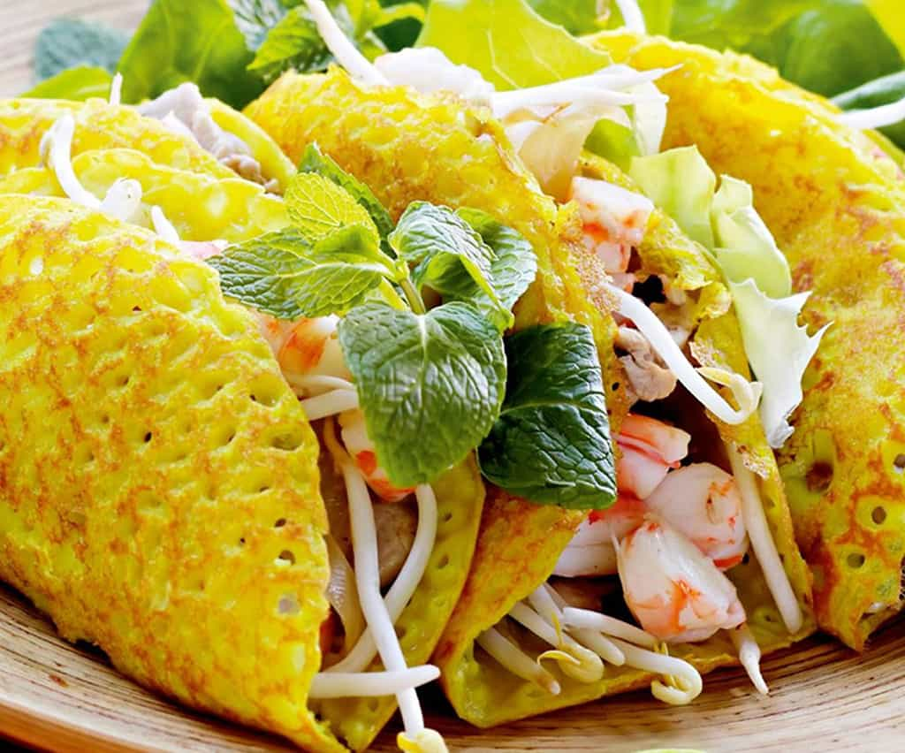
Bánh xèo thường bán từ chiều đến tối như một món ăn chơi nhưng cực đã miệng ở Nha Trang. Một số quán bánh xèo nổi tiếng mà bạn nên biết như:
- Quán bánh xèo: 64 Hồng Bàng, Nha Trang.
- Quán bánh xèo: 52 Phan Bội Châu, Nha Trang.
- Quán bánh xèo: 172 Bạch Đằng, Nha Trang.
- Bánh xèo chảo: 85 Tô Hiến Thành, Nha Trang.
- Bánh xèo Vàng: 151 Trần Nguyên Hãn, Nha Trang.
- Các quán vỉa hè: Dọc đường Tháp Bà (qua cầu Trần Phú rẽ trái).
6. Bánh Căn
Cứ tưởng tượng lúc trời se se, có chút mưa nhẹ, ngồi canh lò than hồng chờ đợi từng cặp bánh căn chín vàng ươm trong lò không còn gì mong đợi bằng. Món ăn sáng đúng điệu ẩm thực Nha Trang của các bạn học sinh, sinh viên là đây.
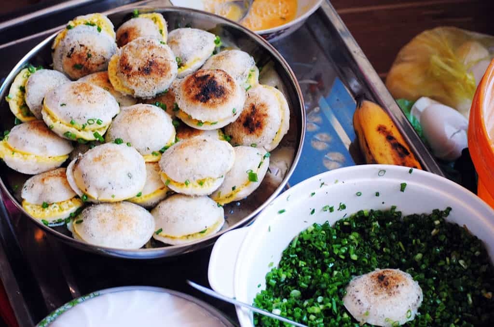
Nước mắm là yếu tố chính giúp món bánh căn thêm đậm vị.
Vỏ bánh căn làm từ bột và trứng, nướng chín trên than, không dầu mỡ và lăn qua trong tô hành thái nhỏ. Đổ bột vào lò, người ta cho thêm nhân là tôm hoặc mực tươi. Tôm thì nguyên con săn chắc, mực thì một ống nhỏ nhưng dày thịt. Ở vài quán, bánh căn chỉ có nhân trứng không, thịt bò hoặc thịt heo băm.
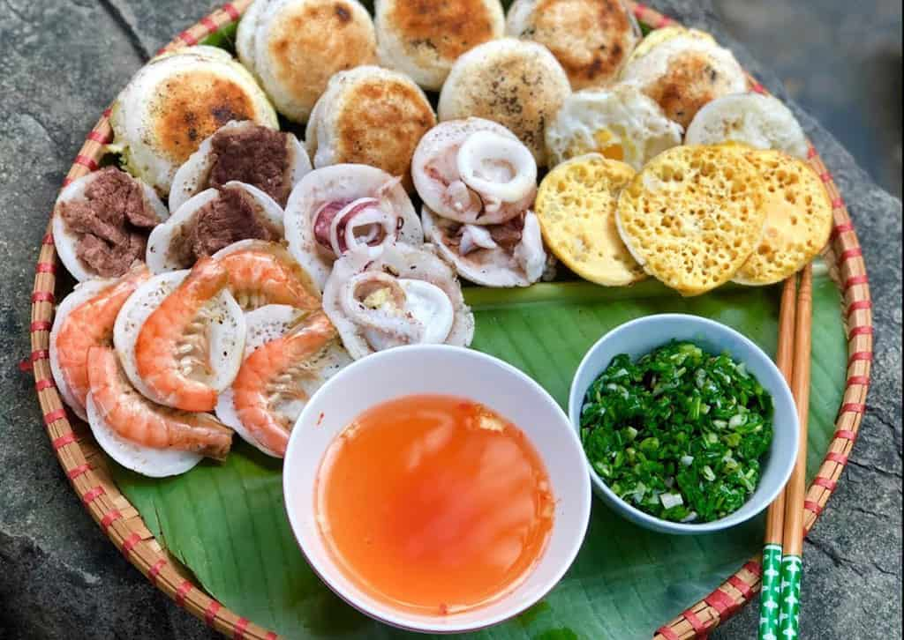
Chén chấm của bánh căn là nước mắm có viên xíu mại, thêm chút xoài bào, ớt và rau sống thì có phải chờ đợi bao nhiêu cặp bánh ra lò cũng mãn nguyện. Tầm chiều tối, dọc các con đường, dù là quán hay ngồi vỉa hè, hầu như hàng bánh căn nào cũng luôn đông khách.
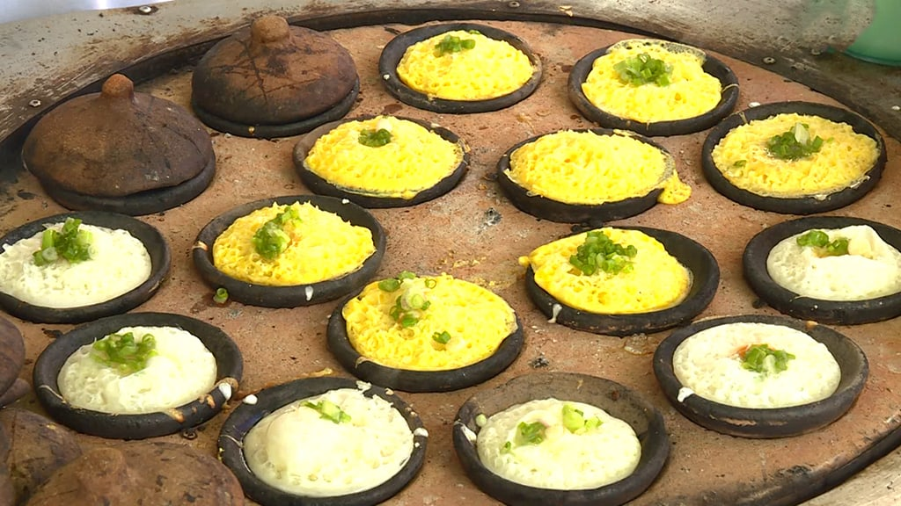
Một số quán bánh căn nổi tiếng Nha Trang để bạn tham khảo:
- Bánh căn: 47 Yersin, Nha Trang.
- Bánh căn: 3A Tháp Bà, Nha Trang.
- Bánh căn: 18 đường 2/4, Nha Trang.
- Bánh căn: 165 Nguyễn Trãi, Nha Trang.
- Bánh căn: 51 Tô Hiến Thành, Nha Trang.
- Bánh căn: 48 Hoàng Hoa Thám, Nha Trang.